Code
x <- seq(-4, 4, 0.01)
d <- dnorm(x, mean = 0, sd = 1)
data.frame(x, d) |>
ggplot(aes(x = x, y = d)) +
geom_line(lwd = 1, col = "dodgerblue") +
xlab("x") +
ylab("Density")Psychological Sciences
Filippo Gambarota
University of Padova
Last modified: 08-12-2025
The Probability Density Function (PDF) is:
\[ f(x, \mu, \sigma) = \frac{1}{\sigma\sqrt{2\pi}} e^{-\frac{1}{2}(\frac{x - \mu}{\sigma})^2} \]
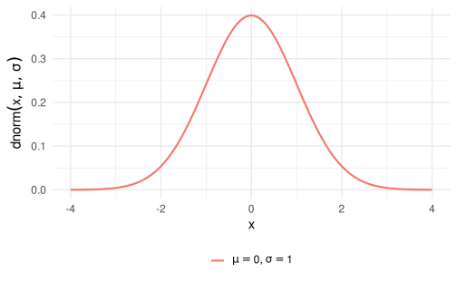
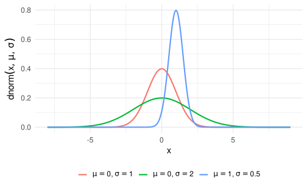
I have some notes about basic stuff and notation for Linear Models.
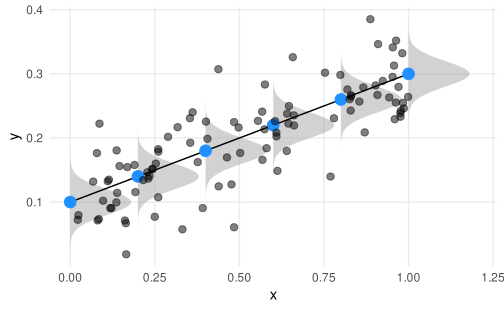
A quick summary about the notation used in the notes:
A probability distribution of a random variable \(X\) is the set of probabilities assigned to each possible value \(x\).
We can have:
As any other function, the probability function has constants and variables:
\[ f(x \mid \boldsymbol{\theta}) \]
Where \(x\) is a specific value and \(\theta\) is a vector of variables defining a specific function and \(f(\cdot)\) is a certain function.
For example, the Gaussian distribution is defined as:
\[ f(x \mid \mu, \sigma^2) = \frac{1}{\sqrt{2\pi\sigma^2}} \exp\left( - \frac{(x - \mu)^2}{2\sigma^2} \right) \]
Here the variables are \(\mu\) (the mean) and \(\sigma^2\) (the variance) while \(\pi\) is a constant.
An important distinction is about discrete and continuous random variables:
The PMF return the probability associated with a certain value of \(x\) while the PDF returns the probability density of a certain value of \(x\)
In the case of a Poisson random variable:
\[ p(x \mid \lambda) = \frac{\lambda^{x} e^{-\lambda}}{x!} \]
Where the only variable is \(\lambda\).
When we use the distributions, we are usually interested in some properties describing the distribution. These are called moments defined as quantitative measures related to the shape of the function’s graph1. Common moments are:
The Wikipedia pages of the probability distributions are very clear and complete. For the Gamma distribution:
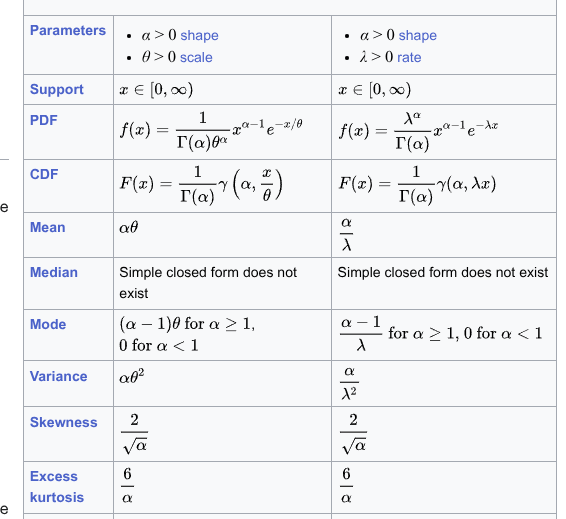
In linear and generalized linear models we generally include predictors on the mean (first moment) of the distribution. Knowing how the mean and is computed from the parameters is crucial to understand the model.
In addition we can note that:
In addition to the PDF/PMF we have also:
q* (e.g., qnorm()) function.p* (e.g., pnorm()) function.With the Gaussian distribution the PDF is computed using dnorm(x, mean, sd):
x <- seq(-4, 4, 0.01)
d <- dnorm(x, mean = 0, sd = 1)
data.frame(x, d) |>
ggplot(aes(x = x, y = d)) +
geom_line(lwd = 1, col = "dodgerblue") +
xlab("x") +
ylab("Density")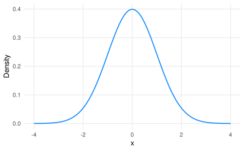
cp <- pnorm(x, mean = 0, sd = 1)
qf <- qnorm(cp, mean = 0, sd = 1)
cpp <- data.frame(
x, cp
) |>
ggplot(aes(x = x, y = cp)) +
geom_line()
qfp <- data.frame(
x, cp
) |>
ggplot(aes(x = cp, y = x)) +
geom_line()
cpp + qfp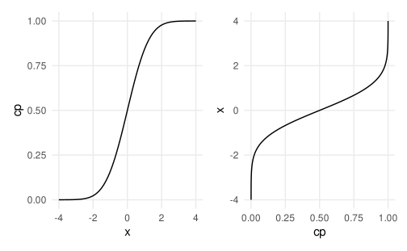
In Psychology, variables do not always satisfy the properties of the Gaussian distribution. For example:
Non-negative and probably skewed data:
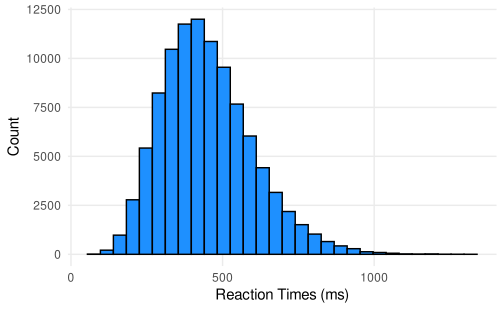
A series of binary (i.e., bernoulli) trials with two possible outcomes:
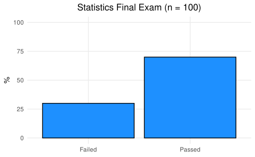
Number of symptoms for a group of patients during the last month:
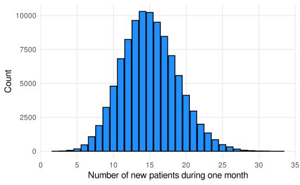
Probability of passing the exam as a function of how many hours people study:
#> # A tibble: 10 × 3
#> id studyh passed
#> <int> <dbl> <int>
#> 1 1 58 0
#> 2 2 8 0
#> 3 3 33 0
#> 4 4 98 0
#> 5 5 40 1
#> 6 6 4 0
#> 7 7 67 1
#> 8 8 37 0
#> 9 9 67 1
#> 10 10 72 1nrow(dat) # number of participants
#> [1] 50
sum(dat$passed) # number of people that have passed the exam
#> [1] 21
nrow(dat) - sum(dat$passed) # number of people that have not passed the exam
#> [1] 29
mean(dat$passed) # proportion of people that have passed the exam
#> [1] 0.42
# study hours and passing the exam
tapply(dat$studyh, dat$passed, mean)
#> 0 1
#> 31.48276 71.33333
table(dat$passed, cut(dat$studyh, breaks = 4))
#>
#> (0.903,25.2] (25.2,49.5] (49.5,73.8] (73.8,98.1]
#> 0 13 9 6 1
#> 1 0 3 8 10
tapply(dat$passed, cut(dat$studyh, breaks = 4), mean)
#> (0.903,25.2] (25.2,49.5] (49.5,73.8] (73.8,98.1]
#> 0.0000000 0.2500000 0.5714286 0.9090909Let’s plot the data:
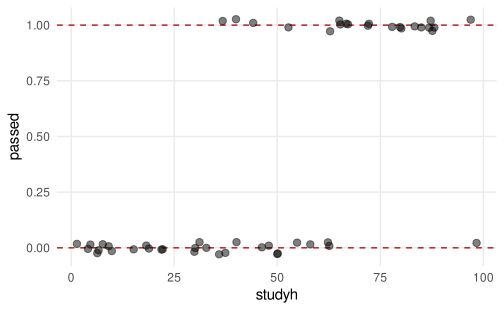
Let’s fit a linear model passing ~ study_hours using lm:
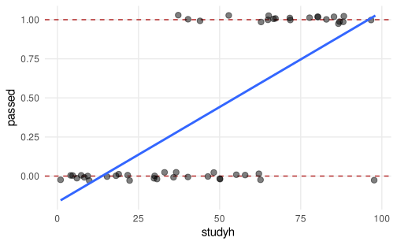
Do you see something strange?
A little spoiler, the relationship should be probably like this:
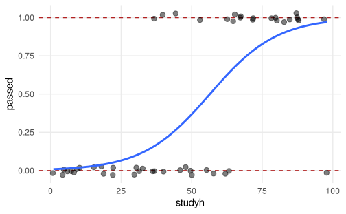
Another example, the number of solved exercises in a semester as a function of the number of attended lectures (\(N = 100\)):
#> # A tibble: 10 × 3
#> id nattended nsolved
#> <int> <dbl> <int>
#> 1 1 5 1
#> 2 2 54 14
#> 3 3 51 16
#> 4 4 58 22
#> 5 5 38 5
#> 6 6 38 5
#> 7 7 15 1
#> 8 8 31 6
#> 9 9 47 13
#> 10 10 38 8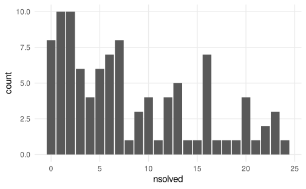
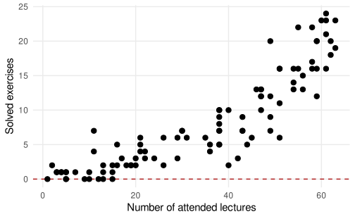
Again, fitting the linear model seems partially appropriate but there are some problems:
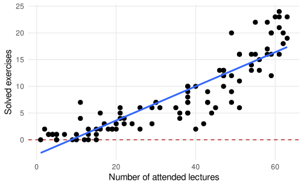
Again, fitting the linear model seems partially appropriate but there are some problems:
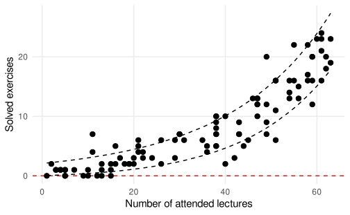
Also the residuals are quite strange:
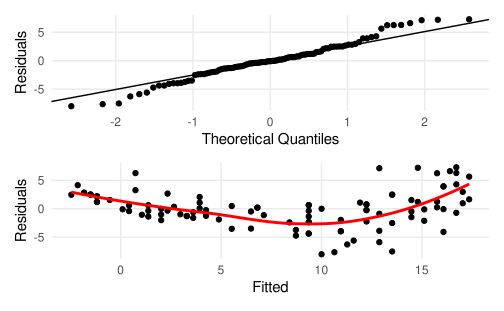
Another little spoiler, the model should consider both the support of the y variable and the non-linear pattern. Probably something like this:
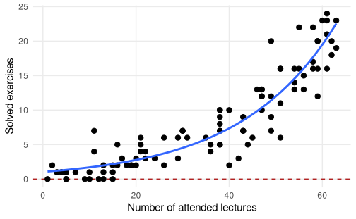
Both linear models somehow capture the expected relationship but there are serious fitting problems:
As a general rule in life statistics:
All models are wrong, some are useful
The first book ever:
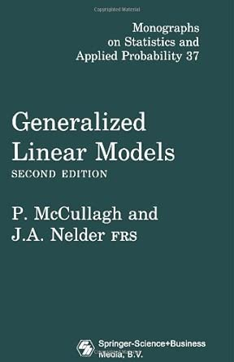
For a detailed introduction about GLMs
Chapters: 1 (intro), 4 (GLM fitting), 5 (GLM for binary data)
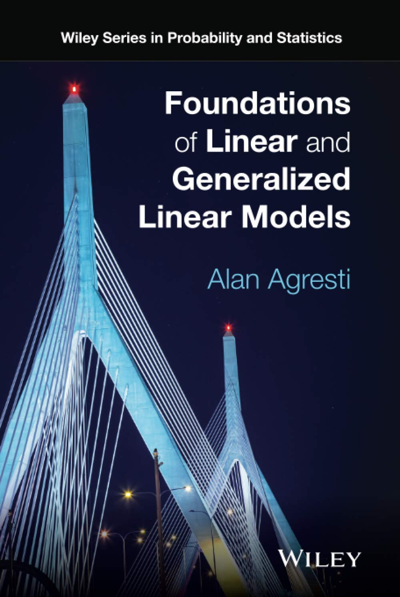
For a basic and well written introduction about GLM, especially the Binomial GLM
Chapters: 3 (intro GLMs), 4-5 (Binomial Logistic Regression)
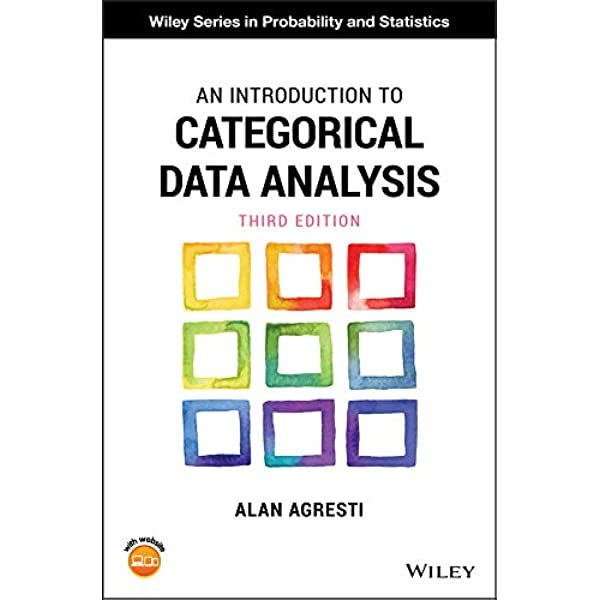
Great resource for interpreting Binomial GLM parameters:
Chapters: 13-14 (Binomial Logistic GLM), 15 (Poisson and others GLMs)
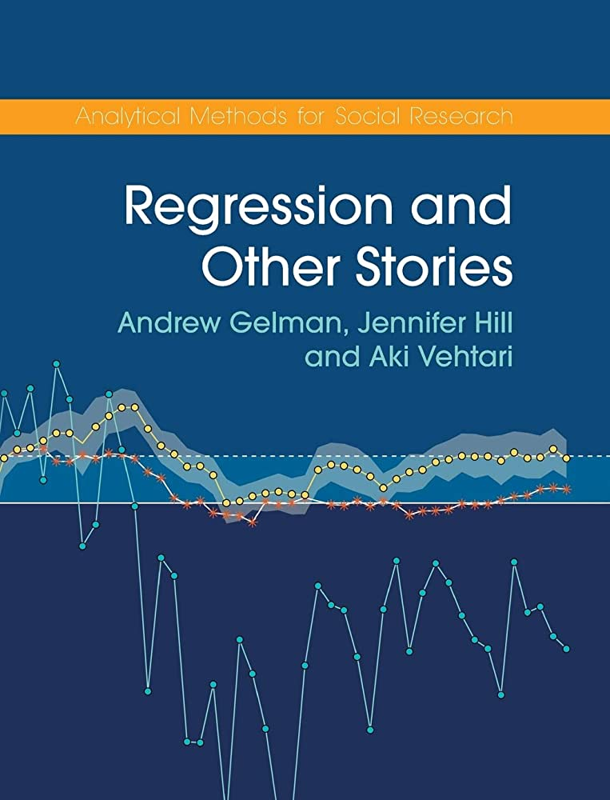
Detailed GLMs book. Very useful especially for the diagnostic part:
Chapters: 8 (intro), 9 (Binomial GLM), 10 (Poisson GLM and overdispersion)
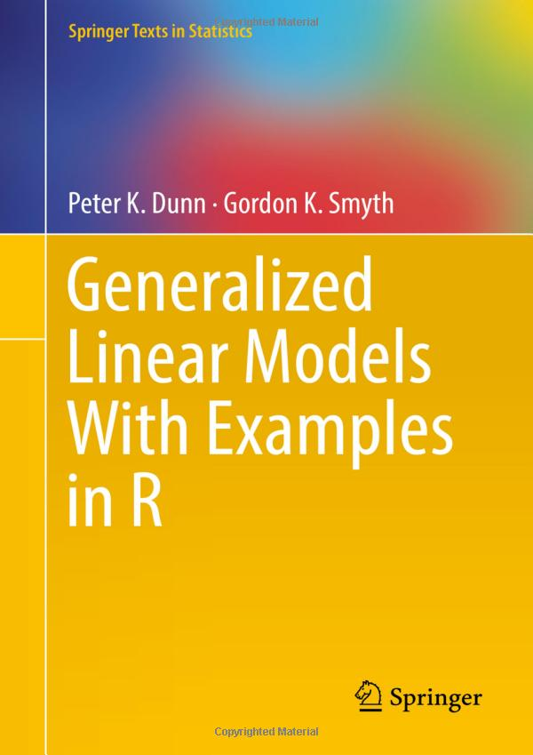
The holy book :)
Chapters: 14 and 15
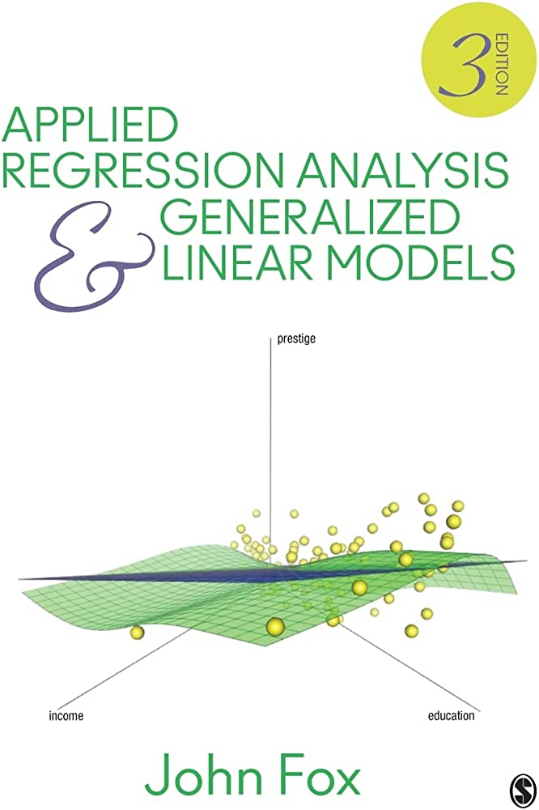
Another good reference…
Chapters: 8
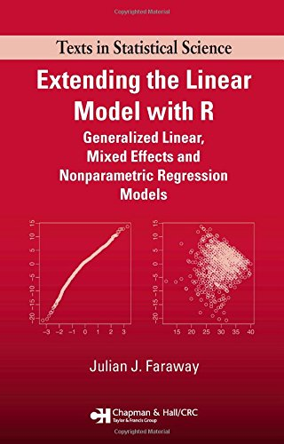
The random component of a GLM identify the response variable \(y\) coming from a certain probability distribution.
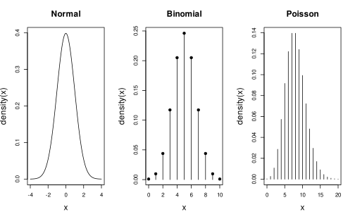
The systematic component or linear predictor (\(\eta\)) of a GLM is:
\[ \eta_i = \beta_0 + \beta_1 x_{i1} + \beta_2 x_{i2} + \cdots + \beta_p x_{ip} \]
Or in matrix notation:
\[ \boldsymbol{\eta} = \mathbf{X}\boldsymbol{\beta} \]
Basically it describes how the expected value (i.e., the mean, the first moment) \(\mu\) of the chosen distribution (the random component) varies according to the predictors.
The link function \(g(\cdot)\) is an invertible function linking the expected value (i.e., the mean, the first moment) \(\mu\) of the random component with the systematic component \(\boldsymbol{\eta} = \mathbf{X}\boldsymbol{\beta}\).
\[ g(\boldsymbol{\mu}) = \boldsymbol{\eta} = \mathbf{X}\boldsymbol{\beta} \]
The inverse link function \(g^{-1}(\cdot)\) maps \(\eta\) into the original scale \(\mu\).
\[ \boldsymbol{\mu} = g(\boldsymbol{\eta})^{-1} = g(\boldsymbol{\mathbf{X}\boldsymbol{\beta}})^{-1} \]
The simplest link function is the identity link where \(g(\mu) = \mu\) and corresponds to the standard linear model. In fact, the linear regression is just a GLM with a Gaussian random component and the identity link function.
| Family | Link | Range |
|---|---|---|
| `gaussian` | identity | $$(-\infty,+\infty)$$ |
| `gamma` | log | $$(0,+\infty)$$ |
| `binomial` | logit | $$\frac{0, 1, ..., n_{i}}{n_{i}}$$ |
| `binomial` | probit | $$\frac{0, 1, ..., n_{i}}{n_{i}}$$ |
| `poisson` | log | $$0, 1, 2, ...$$ |
A single Bernoulli trial is defined as:
\[ f(x, p) = p^x (1 - p)^{1 - x} \]
Where \(p\) is the probability of success and \(k\) the two possible results \(0\) and \(1\). The mean is \(p\) and the variance is \(p(1 - p)\)
The probability of having \(k\) success (e.g., 0, 1, 2, etc.), out of \(n\) trials with a probability of success \(p\) (and failing \(q = 1 - p\)) is:
\[ f(n, k, p)= \binom{n}{k} p^k(1 - p)^{n - k} \]
The \(np\) is the mean of the binomial distribution and \(np(1 - p)\) is the variance. The binomial distribution is just the repetition of \(n\) independent Bernoulli trials.
A classical example for a Bernoulli trial is the coin flip. In R:
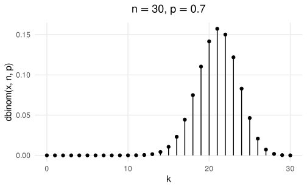
# generate k (success)
n <- 50 # number of trials
p <- 0.7 # probability of success
rbinom(1, n, p)
#> [1] 31
# let's do several experiments (e.g., participants)
rbinom(10, n, p)
#> [1] 41 36 33 31 31 36 32 39 34 33
# calculate the probability density given k successes
n <- 50
k <- 25
p <- 0.5
dbinom(k, n, p)
#> [1] 0.1122752
# calculate the probability of doing 0, 1, 2, up to k successes
n <- 50
k <- 25
p <- 0.5
pbinom(k, n, p)
#> [1] 0.5561376The Bernoulli distributions is used as random component when we have a binary dependent variable or the number of successes over the total number of trials:
The Bernoulli or the Binomial distributions can be used as random component when we have a binary dependent variable or the number of successes over the total number of trials.
When fitting a GLM with the binomial distribution we are including linear predictors on the expected value \(\mu\) i.e. the probability of success.
Most of the GLM models deal with a mean-variance relationship:
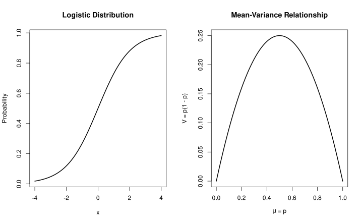
The number of events \(k\) during a fixed time interval (e.g., number of new users on a website in 1 week) is:
\[\begin{align*} f(k,\lambda) = Pr(X = k) = \frac{\lambda^k e^{-\lambda}}{k!} \end{align*}\]
Where \(k\) is the number of occurrences (\(k = 0, 1, 2, ...\)), \(e\) is Euler’s number (\(e = 2.71828...\)) and \(!\) is the factorial function. The mean and the variance of the Poisson distribution is \(\lambda\).
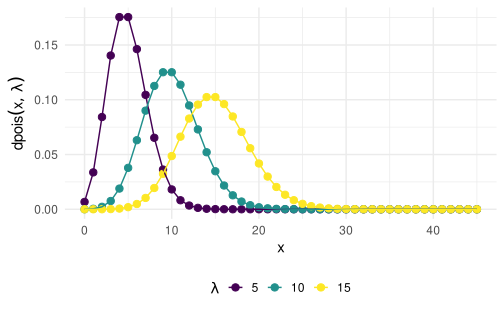
As \(\lambda\) increases, the distribution is well approximated by a Gaussian distribution, but the Poisson is discrete.
We can also use all the other functions such as the dpois(), qpois() and ppois()
The mean-variance relationship can be easily seen with a continuous predictor:
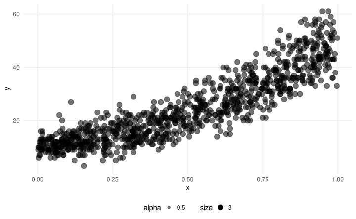
The Gamma distribution has several :parametrizations. One of the most common is the shape-scale parametrization:
\[ f(x;k,\theta )={\frac {x^{k-1}e^{-x/\theta }}{\theta ^{k}\Gamma (k)}} \] Where \(\theta\) is the scale parameter and \(k\) is the shape parameter.
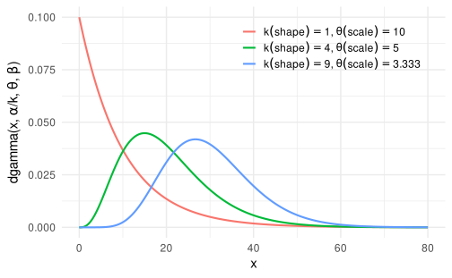
The mean and variance are defined as:
Another important quantity is the coefficient of variation defined as \(\frac{\sigma}{\mu}\) or \(\frac{1}{\sqrt{k}}\) (or \(\frac{1}{\sqrt{\alpha}}\)).
The Gamma distribution is quite complex, I have some notes with more insigths about the parametrization.
Again, we can see the mean-variance relationship:
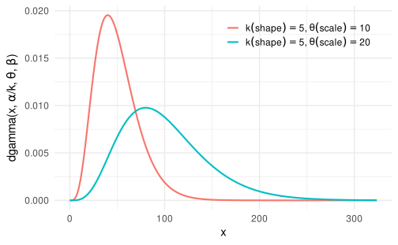
To convert between different parametrizations, you can use the gamma_params() function:
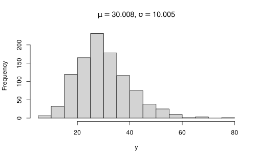
Is not always easy to work with link functions. In R we can use the distribution(link = ) function to have several useful information. For example:
fam <- binomial(link = "logit")
fam$linkfun() # link function, from probability to eta
fam$linkinv() # inverse of the link function, from eta to probabilityWe are going to see the specific arguments, but this tricks works for any family and links, even if you do not remember the specific function or formula.
Dunn & Smyth (2018) uses a nice way of presenting models that could be useful. Basically He specifies the random component distribution and then he specified the parameter(s) where we are including the systematic component.
For example, a Generalized Linear Model with the Gaussian family and identity link could be written as:
\[ \begin{aligned} y_i &\sim \mathrm{N}(\mu_i, \sigma^2) \quad && \text{Random component} \\ \mu_i &= g^{-1}(\eta_i) \quad && \text{Inverse link} \\ \eta_i &= g(\beta_0 + \beta_1 x_{1i} + \beta_2x_{2i}) \quad && \text{Systematic component, link} \\ \end{aligned} \]
The \(i\) subscript indicates that that element varies for each observation \(i\) according to the linear predictor \(\eta_i\) after taking the inverse of the link function.